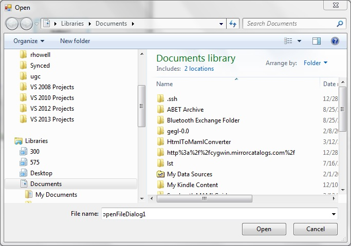
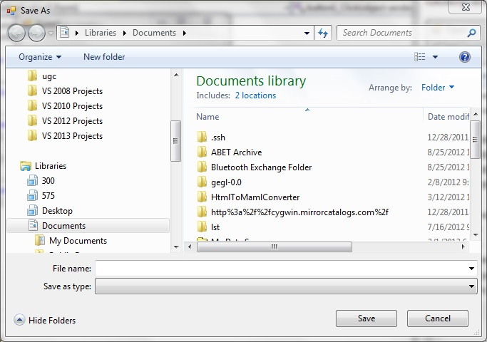

Although these dialogs are visually separate from the window from which they are opened, it is possible (and usually desirable) to add instances of these classes to a form from the Design window. Both can be found in the "Dialogs" section of the Toolbox. They can be added to the form simply by double-clicking on their names. They will not appear on the form itself, but in a separate area of the Design window. Their properties can then be modified in the same way as any other control. We will discuss some of these properties a bit later in what follows.
Each of these classes has a method called ShowDialog that takes no parameters. For example, if we call the ShowDialog method of an OpenFileDialog, a dialog resembling the following will be opened:
Similarly, calling the ShowDialog method of a SaveFileDialog opens a dialog resembling the following:
Because these dialogs are modal, the method call will not return until the user closes the dialog. It will then return a DialogResult indicating how the user closed the form - either DialogResult.OK or DialogResult.Cancel (see the previous section for more information on the DialogResult type). Therefore, if uxFileDialog is a variable referring to a file dialog, we typically use the following code template to display it:
if (uxFileDialog.ShowDialog() == DialogResult.OK)
{
// Process the file
}
Thus, if the user selects a file, we process it; otherwise, we do
nothing. In some cases, we might include an else
containing code that needs to be executed if the user closes the
dialog without selecting a file.
Processing a file will be discussed in the three sections that follow. However, one thing we will certainly want to do prior to processing the file is to obtain the file name that the user selected (after all, this is the reason we display a file dialog). We can obtain this file name via the dialog's FileName property; for example,
string fileName = uxFileDialog.FileName;Note that this and other properties are accessible for initialization purposes through a file dialog's Properties window in the Designer. This is useful for an OpenFileDialog's FileName property, as the default supplied by Visual Studio® is rather odd. Other properties that we might want to initialize here (in addition to (Name), the name of the variable referring to the dialog) include:
C# files|*.cs|All files|*.*A filter string consists of an even number of components separated by vertical bars ("|"). Thus, the above filter string consists of four components. These components are grouped into pairs. The first component of each pair gives the string that will be displayed in the dialog to describe what files are displayed. The second component of each pair describes a pattern of file names to be displayed when the first component of that pair is shown. Use an asterisk ("*") in a pattern to denote any sequence of characters. The "." in a pattern ending in ".*" does not need to be matched - a file without an extension will be listed if it matches the pattern to the left of the ".". Multiple patterns, separated by semicolons (";"), may be listed in one component. Thus, the above filter string describes two filters that the user may choose from. The first filter is labeled, "C# files", and lists all files ending in ".cs". The second filter is labeled "All files", and lists all files.
Visual Studio is either a registered trademark or a trademark of Microsoft Corporation in the United States and/or other countries.
Last modified: Wed Jan 24 13:22:06 CST 2018
© Copyright 2014, 2018, Rod Howell. All rights reserved.|
|
|
|